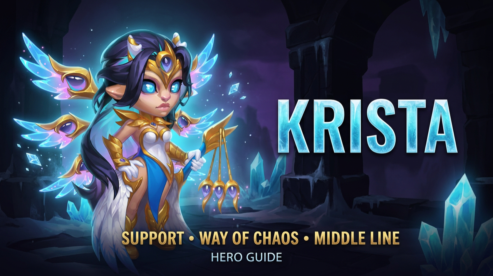

KRISTA
Krista combines powerful area Magic Damage, battlefield control and strong survivability. Her Marks of Water and Frozen Needles can create devastating opportunities for displacement heroes, especially Lars and Cascade.
PREPARE. CONTROL. PUNISH.
Krista prepares the battlefield through Magic Defense reduction, Marks of Water and Frozen Needles. When enemies are forced to move across the frozen battlefield, they can take additional Magic Damage. At the same time, Crystalization gives Krista a powerful defensive response against heavy burst damage.
SKILLS
Icy Vengeance
Krista launches five ice crystals one after another, dealing area Magic Damage while slowing enemies hit. The skill scales with Magic Attack and can deal significant damage, especially when her Weapon Artifact provides additional Magic Attack to the team.
Chains of Frost
Krista targets the center of the enemy formation, reducing Magic Defense and applying Marks of Water. The skill scales with Magic Attack and prepares enemies to receive heavier magical pressure from Krista and allied mages.
Frozen Needles
Krista freezes the battlefield beneath the enemy team. Every movement across the ice thorns causes additional Magic Damage. When the thorns disappear, enemies still standing on them receive a Mark of Water.
Crystalization
When Krista receives a massive burst of damage, she traps herself inside an ice crystal for two seconds and absorbs a large portion of the incoming damage. Attacks received while frozen also generate bonus Energy. A hit equal to roughly 14% of her maximum Health is enough to trigger the ability.
KEY SYNERGIES
LARS
Krista prepares the enemy formation with Marks of Water, Magic Defense reduction and Frozen Needles. Lars can then capitalize on those effects, while his displacement can force enemies to move through Krista's frozen battlefield.
CASCADE
Cascade can also interact effectively with Frozen Needles. Tidal Wave can push enemies across the ice, causing additional damage as enemies are forced to move through the frozen area.
SKINS
Three of Krista's four abilities scale directly from Magic Attack, making it the highest skin priority.
Improves survivability, allowing Krista to remain active longer and continue applying Marks of Water while gaining additional value from Crystalization.
Helps Krista penetrate magical defenses and increases the effectiveness of her spell damage.
Improves Krista's survivability against physical attackers.
Intelligence contributes to Krista's damage and Magic Defense.
Final current priority, adding protection against heavy magical compositions.
Future skins: another Health or Magic Penetration skin would immediately become a top-priority development option according to this build.
GLYPHS
Increases Magic Attack while also strengthening Krista's natural Magic Defense.
Helps Krista survive physical damage earlier in development.
Makes Krista more difficult to remove against magical teams.
Increases the power of her offensive abilities.
Adds further durability and works alongside Crystalization during longer battles.
Progression: unless you are chasing Skill Class bonuses, keep the Glyphs around Level 40.
ARTIFACTS
RING
Increases Intelligence, improving offense and defense simultaneously. This is the highest overall Artifact priority for this build.
WEAPON
Grants Magic Attack to the entire team, providing valuable offensive support to mages in Krista's lineup.
BOOK
Provides Magic Attack and Health. Both stats are valuable, but this build places the Ring and Weapon ahead during early progression.
GIFT OF THE ELEMENTS
MAX IT OUT
Prioritize Intelligence and Magic Attack. Krista benefits from strong base stats to improve her abilities while maintaining the durability needed to remain active throughout the battle.
TALISMANS
Damage Option
Focuses on Krista's offensive output and provides the highest overall damage of the two options described in this build.
Survivability + Penetration
Improves Krista's durability while helping her penetrate enemy magical defenses more consistently.
Both are excellent options. Krista remains fully playable without owning both Talismans when the rest of her build is properly developed.
KRISTA COUNTERS
JORGEN
Steals Energy and can delay Krista's Ultimate, disrupting her ability rotation.
RUFUS
Naturally resists Magic Damage, making him a strong frontline option against Krista.
SATORI
Can punish Krista's bonus Energy generation and turn one of her defensive strengths against her.
CORVUS
His Altar can punish Krista's repeated area damage.
IRIS
Can perform extremely well against Krista because of the debuffs Krista continually applies.
PHOBOS
Can steal Energy, stun Krista and burn additional Energy from the highest Magic Attack hero on the battlefield.
THE QUEEN OF ICE STILL CONTROLS THE FIELD.
Krista combines area Magic Damage, battlefield control, survivability and powerful interactions with displacement heroes. Lars remains her classic partner, while Cascade provides another way to force enemies across Frozen Needles. Krista is not simply a damage dealer — she can prepare the battlefield and enable devastating follow-up pressure from the rest of the team.